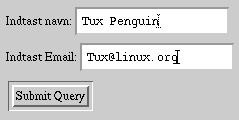

Den mest interessante feature for en webserver er i denne sammenhæng at webserveren ikke kun kan afsende statiske sider, men kan fortolke kode indlejret i websider så som Server-Side Includes, Mod_Perl og PHP, men også at webserveren kan udføre selvstændige programmer, programmets output kan være tekst, billeder eller lyd, og dette bliver af webserveren returneret til browseren. Denne sidste mulighed kaldes for CGI-scripts (Common Gateway Interface). CGI-scripts bruges typisk til at fortolke svaret fra webformularer, tællere af besøgende på en webside og til søge maskiner.
Til at programmere CGI-scripts kan man vælge et vilkårligt programmeringssprog. Til små programmer der udskriver server information kan et shell script være passende. Til sider hvor svar tiden er kritisk kan C eller C++ anvendes, eller hvor der skal udføres komplekse matematiske operationer. Men normalt skal kun tekst indlæses og udskrives og det er en opgave som programmeringssproget Perl er designet til at løse. Perl er et fortolket sprog, der er beregnet til at behandle tekst med. Fordi det er et fortolket sprog så skal perl koden fortolkes hver gang et script udføres, hvilket tager en del tid. Tilgengæld behøver man ikke at bekymre sig om buffer overflows i perl, hvilket er den hyppigste fejl i C programmer der anvender strenge. Hvis man skal udføre mange CGI-scripts kan det være nødventigt at anvende Fast_Cgi eller Mod_Perl modulet hvis funktion forklares senere.
De følgende afsnit indeholder perl eksempler og kode stumper. Funktioner
der allerede anvendt i tidligere er slettet for at holde længden af scripts
nede, men der står også hvilke kode stumper der mangler og hvor de kan findes.
Mange af disse eksempler kan downloades i et fuldt fungerende eksempel. Står
der fx. #filnavn: debug.cgi i perl koden betyder det, at kode
eksempel kan downloades som http://www.sslug.dk/???????/debug.cgi.
Hvis du selv bestyrer en webserver skal den først konfigureres til at udføre filer af typen .cgi som CGI-scripts, hvis du bruger et web-hotel så vil du sikkert have adgang til noget information om hvor og hvordan scripts kan udføres. Følgende ændringer skal udføres i Apaches konfigurationsfiler, der ligger normalt i /etc/httpd/conf kataloget:
Filen srm.conf skal indeholde følgende linier
AddHandler cgi-script .cgi ScriptAlias /cgi-bin/ /home/httpd/cgi-bin/
Filen access.conf definere web browseres rettigheder til at hente sider i kataloger, og 'Options ExecCGI' skal være slået til i alle kataloger hvor webserveren skal udføre scripts. Typisk er der i forvejen et /home/httpd/cgi-bin katalog hvor webserveren har rettigheder til at udføre scripts:
<Directory /home/httpd/cgi-bin> AllowOverride None Options ExecCGI </Directory>
Det kan være nødventigt at ændre adgangen til dette katalog så du som
normal bruger kan skrive til det. Dette gøres med kommandoen "chmod
o+rwx /home/httpd/cgi-bin"
I httpd.conf skal indeholde følgende liner
LoadModule dir_module modules/mod_dir.so AddModule mod_cgi.c
Mange af disse ændringer består i at fjerne udkommenteringen '#' i
eksisterende linier. Når disse ændringer er udført og webserveren genstartet
med /etc/rc.d/init.d/httpd restart, så vil et script
'runme.cgi' der ligger i
/home/httpd/cgi-bin/ kataloget kunne udføres ved at man i en
browser beder om http://localhost/cgi-bin/runme.cgi.
Et program har altid tre data strømme: stdin (Standard input) der er input fra keybord, stdout (Standard output) der er output til skærmen, og stderr (Standard error) der er fejl meddelelser og også udskrives til skærmen.
Når webserveren udfører et CGI-script vil alle data der udskrives til stdout blive returneret til browseren. Data der skrives til stderr vil blive gemt i webserverens error log /var/log/httpd/error_log. Scriptet kan også modtage data på stdin fra webserveren, dette vil typisk være data der er indtastet i en webformular eller filer der skal oploades. CGI-scripts modtager også en række data igennem environment variable.
I det følgende afsnit vil vi introducere CGI-scripts der returnere et simpelt svar og ikke modtager data, forklare hvordan scripts kan returnere forskellige data typer, og gå igennem hvordan scripts kan modtage data fra webformularer og anvende environment variable til at besteme fx. IP addressen på den web browser som ønsker data. Forklare sikkerhedsproblemerne der er omkring scripts, og hvordan man debugger dem.
Det simpleste eksempel på et CGI-script er et der bare returnere et svar fx. hvad er klokken. Gem følgende script i /home/httpd/cgi-bin/ som klokken.cgi
#!/usr/bin/perl -w #Filnavn: klokken.cgi #Udskriv header print "Content-Type: text/plain\r\n"; print "\r\n"; #Udskriv tekst indhold print "Datoen er ".scalar(localtime);
Køres klokken.cgi på kommando linen får man:
Content-Type: text/plain Datoen er Thu Jul 20 11:38:08 2000
Prøv nu at hente det i en web browser som
http://localhost/cgi-bin/klokken.cgi. Du skulle gerne kunne se
hvad datoen er. Prøv at reloade siden nogle gange, så du kan se sekunderne gå.
Hvis dette ikke virker så kig i sektionen om 'Typiske Fejl'.
Først udskriver scriptet en linie med en "Content-Type" der fortæller web browseren, hvad den skal gøre med hvad de data der følger, feltet kaldes for media typen. Her betyder text/plain det at indholdet er ascii tekst formatteret, ligesom når man loader en .txt fil i browseren. Der kan være flere headere og de afsluttes med en tom linie, alt under den tomme linie er data der vises i browseren.
Tekst er lidt kedeligt, så vi kunne istedet ønske at returnere html formateret tekst. Dette kan let gøres ved at modificere scriptet som følger:
#!/usr/bin/perl -w
#Filnavn: klokken2.cgi
#Udskriv header
print "Content-Type: text/html\r\n";
print "\r\n";
#Vælg tilfældig farve
my $color=sprintf("%x",int rand 0x1000000);
#Udskriv HTML indhold
print "<H1>Datoen er: ";
print " <font color=\"#$color\">", scalar(localtime) ,"</font>";
print "</H1>";
Programmet vil nu udskrive datoen med store bogstaver og med en tilfældig farve der ændres hver gang scriptet reloades.
Et CGI-script kan ikke kun returnere tekst, men også en lang række af multimedia formater. I Netscape kan man i Edit/Preferences/Navigator/Applications se hvilke programmer, der udføres når browseren modtager en fil med en bestemt Media type, hvis Netscape ikke kender filtypen bliver brugerne bedt om at gemme filen på harddisken.
Følgende er en liste af Media-typer for nogle hyppigt anvendte formater.
| Media type | Beskrivelse |
| text/plain | ASCII formateret tekst (.txt) |
| text/html | HTML formateret tekst (.html eller .htm) |
| image/jpeg | JPEG billed (.jpeg eller .jpg) |
| image/png | PNG billed (.png) |
| image/gif | GIF billed (.gif) |
| application/postscript | Postscript dokument. (.ps) |
| application/x-dvi | DVI fil kompileret latex fil (.dvi) |
| application/pdf | Portable Document Format fil (.pdf) |
| audio/x-mpeg | Mpeg komprimeret lyd (.mp3) |
| audio/x-wav | Wave fil (.wav) |
| video/x-mpeg2 | MPEG animation (.mpeg) |
| video/quicktime | Quicktime animation (.mov) |
| video/x-msvideo | Microsoft Video (.avi) |
Hvis man returnere et svar med et CGI-script kan det ske at browseren cacher det, og en reload vil derfor ikke køre scriptet igen, men kun vise det resultat der ligger i cachen. Følgende kode stump browseren og web caches som squid at scriptets output ikke skal caches.
#Udskriv header print "Content-Type: text/html\r\n"; #HTTP 1.1 print "Cache-Control: no-cache\r\n"; #HTTP 1.0 tilbage kompatibel print "Pragma: no-cache\r\n"; print "\r\n"; #Her udføres resten af scriptet
Hvis output kan gemmes i en cache, men man ønsker at kontrollere levetiden så kan dette gøres med Expires headeren, følgende kode stump viser hvordan dette gøres:
#Udskriv Header use POSIX qw(strftime); #må leve en time i cachen my $levetid = 1*60*60; #korrekt format laves med følgende linie my $date = strftime "%a, %e %b %Y %H:%M:%S GMT", gmtime(time+$levetid); print "Content-Type: text/html\r\n"; print "Expires: ",$date,"\r\n"; print "\r\n"; #Her udføres resten af scriptet
Programmet vil fx. udskrive en "Expires: Sat, 29 Jul 2000 16:45:27 GMT" linie, der betyder at efter den dato er cache versionen forældet. Programmet fungere ved at time returnere antallet af sekunder, der er gået siden 1 januar 1970, til dette antal sekunder lægges dokumentets levetid, og dette konverteres af gmtime til en tabel af tidsdata i forhold til GMT, strftime konvertere den tabel til det format som HTTP standarden forskriver.
Mere information om headere kan findes i RFC 1945 og RFC 2068 dokumenterne der definere HTTP 1.0 og HTTP 1.1 protokollerne.
I mange situationer bruges et script til at sende browsereren en bestemt statisk side ud af mange, statisk i betydningen at indeholdet af siden ikke ændres af scriptet, fx. kunne et script returnere forskellige sider til forskellige browsere, eller forskellige sider på forskellige tidspunkter af døgnet eller til forskellige IP addresser. Det kunne også være at man ville have en jukeboks der spiller en tilfældig lydfil, eller viser et tilfældigt baggrundbilled hvergang man besøger en side.
Istedet for at indlæse en fil og returnere indholdet af filen til browseren kan et script istedet returnere en redirektion, der fortæller browseren at den kan finde svaret på den URL istedet. Syntaxen er "Location: URL".
Et eksempel:
Hver gang en browser forsøger at hente et katalog uden at specificere en index fil, så afsendes index.html filen. Denne funktionalitet specificeres i srm.conf med linien:
DirectoryIndex index.htm index.html index.shtml index.cgi
Dvs. at index.cgi køres hvis ikke nogen af de andre index filer kan findes i kataloget. Så gem følgende script som index.cgi i et katalog med en masse html filer, og hvor der ikke er nogen anden index fil.
#!/usr/bin/perl -w #Filnavn: index.cgi #Lav en liste med indholdet af ./ kataloget #dvs. samme katalog som index.cgi selv opendir DIR, "./" or die "Can't list directory /.!\n"; #filtrer listen så den kun indeholder .html filer my @files = grep /\.html$/, readdir(DIR); #vælg tilfældigt index i listen my $no=int rand ($#files+1); #udskriv en location til dokument no $no print 'Location: ', $files[$no] ,"\r\n\r\n";
Scriptet vil finde alle .html filer i samme katalog, og udskrive en redirektion til en filfældig .html fil.
Den samme metode kan bruges til at returnere et tilfældigt baggrundbilled hver gang en person besøger en side. Hvis der ligger en masse Jpeg billeder i /baggrund kataloget, kan ovenstående script gemmes i /baggrund kataloget, og modificeres så '\.html' ændres til '\.jpeg', og html koden for sider, der skal have en tilfældig baggrund er nu:
<body background="/baggrunde/index.cgi">
CGI-scripts bruges også til at fortolke data, der bliver indtastet i webformulare på nettet, følgende eksempel er en simpel formular, hvor man kan indtaste et navn og email adresse:
<form action="/cgi-bin/get_metoden.cgi" method="GET"> Indtast navn: <input type="text" name="navn"><br> Indtast Email: <input type="text" name="email"><br> <input type="Submit"> </form>
I browseren vil det se ud som:

Når et navn og en email addresse er indtastet, og der trykkes på Submit knappen, så vil browseren sende de indtastede data til webserveren, der starter get_metoden.cgi scriptet. Dataene overfører webserveren igennem environment variablen ved navn QUERY_STRING. (C/C++ scripts vil også modtage dem igennem argz tabellen).
Gem følgende script som get_metoden.cgi i /home/httpd/cgi-bin:
#!/usr/bin/perl -w
print "Content-Type: text/plain\r\n\r\n";
print $ENV{'QUERY_STRING'};
I eksemplet vist vil get_data.cgi udskrive "navn=Tux+Penguin&email=Tux%40linux.org". Scriptet modtager altså data fra webformularen, men de ser lidt mystiske ud! Formattet af data er "variabel1=indtastning1&variabel2=indtastning2&..". Hvor variabel1 og variabel2 svarer til indeholdet af name feltet i html koden (altså "navn" og "email").
Både navne og indtastninger er URLenkrypterede. Det betyder at at mellemrum skiftes ud med '+', ligeledes bliver en række karaktere specielt '=','%' og '&' ombyttet med den tilsvarende hexadecimal kode skrevet som %xx. I eksemplet blev '@' lavet om til %40.
For at URLdekryptere en streng skal den altså først klippes i stykker ved alle '&' karaktere, det giver en tabel af strenge af formen "variabel=indtastning". Hver streng skal så klippes ved '=' og man får variabel og indtastning hver for sig, og så skal alle '+' konverteres til mellemrum og bagefter skal alle %xx konverteres til den tilsvarende ascii karakter i både variabel og indtastning strengene, en lille detalje er at %00 null karakteren skal fjernes. Det er vigtigt at dette gøres netop i denne rigtige rækkefølge ellers vil alle '+' karaktere der er indtastet ændres til mellemrum
Følgende perl script laver en URL enkrypteret streng om til en hash %data af name->indtastning data.
#!/usr/bin/perl
#Filnavn: get_metoden.cgi
sub URLdekrypt
#Udfører url dekryption på en streng.
{
my ($input)=(@_);
my ($variabel,$indtastning);
my %data;
#Klip input strengen ved all '&' karaktere
my @query=split /&/, $input;
#loop gennem tabellen af "variabel=indtastning" strenge
foreach (@query)
{
#Klip ved '='
($variabel,$indtastning)=split /=/, $_;
#fix '+' før %xy!
$variabel =~ tr/+/ /;
$indtastning =~ tr/+/ /;
#null karaktere uønskede!
$variabel =~ s/%00//g;
$indtastning =~ s/%00//g;
#substituter %xy med den tilsvarende karakter..
$variabel =~ s/%([0-9A-Fa-f]{2})/pack("c",hex($1))/ge;
$indtastning =~ s/%([0-9A-Fa-f]{2})/pack("c",hex($1))/ge;
#Hvis flere felter har samme navn så konkateneres deres indhold
#separeret af en '|' karakter.
if ($data{$variabel})
{ $data{$variabel}=$data{$variabel}."|".$indtastning; }
else
{ $data{$variabel}=$indtastning; }
}
return %data;
}
my %data=URLdekrypt($ENV{'QUERY_STRING'});
#udskriv data
print "Content-Type: text/plain\r\n\r\n";
print "Jeg modtog følgende data:\n";
foreach (sort keys %data)
{
print " $_ = \"$data{$_}\"\n";
}
Programmet vil udskrive
Jeg modtog følgende data:
email = "Tux@linux.org"
navn = "Tux Penguin"
Istedet for at udskrive disse i browseren kunne scriptet addere navn og email addressen til en database, eller en besøgsbog, sende en email til addressen, eller hvad nu man kan finde på.
Rent praktisk returnere get metoden data ved at konkatenere dem til URL'en til cgi scriptet afskildt af et spørgsmålstegn (se i browserens titel vindue). Browseren sender så hele denne URL til webserveren. Get metoden har den fordel at man kan lave bogmærker med den side, som scriptet returnere på basis af de indtastet data, dette bruges typisk til at bogmærker af søge resulteter når man bruger en søge maskine. Hvis denne streng er meget lang risikere man at få et bufferoverflow i browseren eller visse webservere, der så vil crashe. En overgang kunne enhver Microsoft Internet Server version 4.0 hackes på den måde. Get metoden kan altså kun bruges til scripts hvor mindre end ca. 200 bytes skal returneres.
Alternativt findes post metoden for at sende data tilbage til webserveren. Når et data Post'es så modtager CGI scriptet data på standard input, ligesom data var indtastet på tastaturet, men de er stadig URLenkrypterede, og environment variablen CONTENT_LENGTH indeholder antallet af bytes der kan indlæses. Det har fordelen at meget store datamængder kan returneres uden problemer, men det er umuligt at lave en bookmark til den side, der returneres efter en indtastning. Det tidligere eksempel kan let omskrives til at bruge post metoden:
<form action="/cgi-bin/post_metoden.cgi" method="POST"> Indtast navn: <input type="text" name="navn"><br> Indtast Email: <input type="text" name="email"><br> <input type="Submit"> </form>
#!/usr/bin/perl
#filnavn: post_metoden.cgi
#URLdekrypt funktionen kommer fra get_metoden.cgi
sub HentPostData
#Returnere en variabel med strengen på stdin
{
#antallet af bytes der venter på stdin
my $ContentLength = $ENV{"CONTENT_LENGTH"};
my $input="";
#max 10 kb input.
my $maxSize=10240;
if($ContentLength)
{
if ($ContentLength<$maxSize)
{
read(STDIN,$input,$ContentLength);
}
else
{
print "Content-Type: text/plain\r\n\r\n";
print "Script input exceeds acceptible size limit!";
die "Error! $ENV{'REMOTE_ADDR'} attempted to submit $contentLength bytes!\n";
}
}
return $input;
}
my %data=URLdekrypt(HentPostData());
#udskriv data
print "Content-Type: text/plain\r\n\r\n";
print "Jeg modtog følgende data:\n";
foreach (sort keys %data)
{
print " $_ = \"$data{$_}\"\n";
}
Post metoden kan modtage lige så store datamænger som man ønsker. Men antallet af scripts der kan kører parallelt og mængden af hukommelse på den computer de køre på sætter en grænse. I ovenstående eksempel er grænsen sat ved 10kb. Hvis en browser forsøger at sende flere data vil CGI-scriptet returnere en fejl til browseren, scriptet vil så dø efter at havde gemt en diagnostisk tekst i webserverens error log, den diagnostiske tekst indeholder $ENV{'REMOTE_ADDR'}, hvilket er IP addressen på den computer der har submittet et for stort svar. Det følgende afsnit forklarer hvilke andre data et CGI-script modtager.
Når et script udføres, så modtager det information om browserens IP address (typisk ikke dens DNS navn), og browserens navn og version. Kun hvis scripte befinder sig i et password beskyttet katalog kan man få information om brugeren, der har indtastet data.
I html koden der kalder scriptet kan der også indlejres information fx.:
<input type="hidden" navn="hemmelig" value="Jeg er en hemmelig streng">
Hvis html koden til en webformular udskrives af et script, og det script ønsker at overføre information til det script der modtager de indtastede data, så kan skjulte felter anvendes. Webbrowseren viser ikke disse felter for brugeren, og deres indhold returneres uændret til scriptet, der modtager de indtastede data. I det ovenstående eksempel vil scriptet modtage en variabel med navnet "hemmelig", der har indholdet "Jeg er en hemmelig streng".
CGI-scripts kan også modtage en sti i environment variablen PATH_INFO, og argumenter i QUERY_STRING. Disse kommer fra action=".." linien i html koden for webformularen. Følgende er en rækker eksempler på hvordan et script kan kaldes fra html koden i en webformular:
| URL til CGI-script | Forklaring |
| /cgi-bin/debug.cgi | Scriptet modtager ikke nogen kommando linie argumenter. |
| /cgi-bin/debug.cgi?arg1&arg2&arg3 | QUERY_STRING environment variablen vil indeholde strengen "arg1&arg2&arg3". |
| /cgi-bin/debug.cgi/foo/bar | PATH_INFO environment variablen vil indeholde strengen "/foo/bar". |
| /cgi-bin/debug.cgi/foo/bar?arg1&arg2&arg3 | Både QUERY_STRING og PATH_INFO vil indeholde data. |
Et eksempel på html koden til en webformular der anvender kommando linie argumenter og skjulte variable:
<form action="/cgi-bin/debug.cgi/foo/bar?arg1&arg2" method="POST"> Indtast navn: <input type="text" name="navn"><br> Indtast Email: <input type="text" name="email"><br> <input type="hidden" navn="hemmelig" value="Jeg er en hemmelig streng"> <input type="Submit"> </form>
Følgende er en liste af de mest interessante environment variable som CGI-scripts har til rådighed:
| Variabel | Indhold |
| REQUEST_METHOD | Indeholder GET eller POST. I eksemplet ovenover "POST". |
| PATH_INFO | Indeholder stien script URLen i webformularens html kode. I eksemplet ovenover indeholder den "/foo/bar". |
| PATH_TRANSLATED | Indeholder PATH_INFO katalog data men relativt til WebRoot. Hvis webfiler ligger i /www så vil den i eksemplet indeholde "/www/foo/bar". |
| QUERY_STRING | Get metode: Indeholder URLenkrypted indtastningsdata.
Post metode: Indeholder argumenter efter '?' i URL'en til CGI scriptet. I eksemplet ovenover indeholder den "Arg1&Arg2" |
| HTTP_ACCEPT | Indeholder de media typer, som browseren kan forstå. En tekst browser vil for eksempel ikke forvente grafik. |
| HTTP_ACCEPT_CHARSET | Karakterset som browseren kan forstå fx. "iso-8859-1,*,utf-8" Dvs. en browser der fortrækker et iso-8859-1 dvs. latin1 enkrypteret svar, man kan acceptere andre karakterset. |
| HTTP_ACCEPT_LANGUAGE | Det sprog som browseren fortrækker et svar på. For en bruger der fortrækker Dansk men den indeholde "da, en". (I Netscape sættes sprog preferencer i Edit/Preferences/Navigator/Languages) |
| HTTP_ACCEPT_ENCODING | Hvis browseren er istand til at klare komprimerede data. fx. "gzip, compress". |
| HTTP_USER_AGENT | Identificere brugerens browser. fx. Netscape 4.73:
"Mozilla/4.73 [en] (X11; U; Linux 2.2.16-3 i686)" Galeon (en gtk browser baseret på Gecko): "Mozilla/5.0 (X11; U; Linux 2.2.16-3 i686; en-US; Galeon) Gecko/20000713". |
| REMOTE_ADDR | IP addresse på computer hvor data er blevet indtastet. |
| REMOTE_HOST | DNS navnet der svarer til IP adressen i REMOTE_ADDR. Denne returneres kun hvis HostNameLookups er slået til i Apache's kontrol filer. Det er den ikke som standard da det forsinker Apache at skulle lave et DNS opslag for hver forbindelse. (Den var slået til i den første netcraft sammenligning mellem Apache og MS Interne Server) |
| REMOTE_USER | Hvis scriptet ligger i et kodeordsbeskyttet katalog, så indeholder REMOTE_USER navnet som brugeren har indtastet sammen med sit kodeord. Det er ikke nok at kodeordsbeskytte den html side, der indeholder webformularen! |
Det følgende echo.cgi script kan bruges som udgangspunkt for egne CGI-scripts og for at debugge webformularer. Det kan modtage både Get og Post data, udskriver alle de data det modtager.
#!/usr/bin/perl
#Filnavn: echo.cgi
#URLdekrypt er den samme funktion som i get_metoden.cgi
#HentPostData kommer fra kodestumpen i afsnittet om Post metoden
my %data;
if ($ENV{'REQUEST_METHOD'} eq "POST")
{
%data= URLdekrypt(HentPostData()); #Post data
}
else
{
%data= URLdekrypt($ENV{'QUERY_STRING'}); #Get Data
}
#Indtastningsdata er nu indlæst i %data
#Udskrivning af data
print "Content-Type: text/plain\r\n\r\n";
print "Variable Modtaget:\n\n";
#udskriv environment variable
print "Environment variable:\n";
foreach (sort keys %ENV)
{
print " $_ = \"$ENV{$_}\"\n";
}
#udskriv webformular data
if (%data)
{
print "\nWebformular data:\n";
foreach (sort keys %data)
{
print " $_ = \"$data{$_}\"\n";
}
}
#Hvis POST metoden bruges og der er argumenter så udskriv disse.
if ($ENV{'QUERY_STRING'} and $ENV{'REQUEST_METHOD'} eq "POST")
{
print "\nArgumenter:\n";
foreach (split /&/, $ENV{'QUERY_STRING'})
{
print " \"$_\"\n";
}
}
Apache returnere "Not Found":
Årsagen er at Apache ikke kan finde CGI-scriptet.
Hvis URL'en indeholder /cgi-bin/ kan fejlen skyldes at ScriptAlias ikke er defineret i srm.conf.
Apache returnere "Forbidden"
Årsagen er at Apache ikke kan udføre scriptet.
Problemet skyldes "Option ExecCGI" ikke er slået til for det katalog som CGI-scriptet ligger i, dette gøres i access.conf. Alternativt kan fejlen skyldes at Apache ikke har lov til at udføre scriptet, det kan typisk kan det løses ved "chmod o+rx script.cgi".
Apache returnere "Internal Server Error"
Denne fejl betyder at det første der udskrives ikke er en korrekt formateret header.
Stderr og stdout outputet fra perl scripts kan findes i webserverens error log ofte lokaliseret i /var/log/httpd/error_log, og det gør det let at løse denne type fejl. Et hurtigt syntax check er at køre cgi scriptet på kommando linien og se om der kommer syntax fejl.
En anden mulighed er at Apache ikke har rettigheder til at læse scriptet, det kan typisk kan løses med "chmod o+r script.cgi", denne type fejl bliver også logged i error_log. Tager Perl scriptet for lang tid at udføre vil en timeout af webserveren også returnere denne fejl.
Fejlen kan også opstå hvis perl fortolkeren ikke ligger i #!/usr/bin/perl, hvilket er en meget lumsk fejl fordi når man kører scriptet vil den svare 'script.cgi: command not found' (tcsh) eller 'bash: script.cgi: No such file or directory', scriptet findes og udføres, fejlen skyldes at den ikke kan finde fortolkeren.
Browseren viser en "The document contained no data.":
Denne fejl kommer hvis scriptet kun udskriver headers, typisk sker der en fejl i scriptet så det dør, og udskriver en fejl i Apache's error log, men undlader at printer en fejl først der kan vises i browseren. Istedet for die kan følgende kode stump bruges hvis man i forvejen har udskrevet headers ($! er fejl teksten svarende til sidste fejl):
sub Fejl
#udskriver fejl til browser og error_log
{
print "Fejl! $!";
die "Fejl! $!";
}
CGI-script caveats der typisk giver fejl:
Scripts køres af webserveren og ikke af dig. typisk er webserver processen
eget af bruger 'nobody' og group 'nobody' det betyder at scriptet skal have
være udførbart og læsbart hvilke gøres med chmod o+rx
script.cgi.
Hvis scriptet skal gemme en fil i et katalog som du ejer, så skal det
kataloget være skrivebart af webserveren, det betyder at katalogets mode skal
være executable, readable og writable for at CGI-scriptet kan gemme en fil i
det. (chmod o+rwx katalog). Hvis man ikke vil give alle og enhver
adgang til at gemme filer i det katalog kan man bruge suExec som forklaret i
afsnittet om sikkerhedsaspekter.
Der opstår fejl i alle programmer, CGI-scripts er dog mere besværlige at debugge fordi de typisk skal køres fra en browser med et korrekt form input for at generere en bestemt fejl, der typisk viser sig som en "Internal Server Error" eller "The document contained no data." i browseren. Og problemet er nu at finde fejlen.
Alt tekst der udskrives til stderr vil udskrives i Apache's error log. Dvs. opstår der en fejl i programmet og det udføre en die "Fatal error occured!", så vil der ikke udskrives nogen information til browseren men "tail /var/log/httpd/error_log" vil udskrive fejl meddelelsen. Det er derfor praktisk at udskrive en fejl med print før at die kaldes, så fejlen kan ses i browseren. Apache har nogle
Den hurtigste måde at debugge et lille script på er ved at indsætte print "Nu gør jeg følgene.." i koden og finde hvor fejlen opstår ved at flytte print linierne rundt og køre scriptet igen og igen og igen...
Men er perl scriptet meget stort eller komplekst kan det tage en del tid at finde fejlen ved at genstarte scriptet gang på gang. Det er istedet mulig at fange input data og gemme dem i på harddisken, og så senere hente %data og %ENV hashes fra harddisken. CGI-scriptet kan så køres i en debugger men med de samme data og environment variable, som hvis det blev kørt af en webserver. Bemærk at det ikke køres med samme bruger og gruppe id!
Den følgende stump perl kode kan bruges til at debugge CGI-scripts med. Den anvender de funktioner der er erklæret i "Et udgangspunkt for et CGI-script" afsnittet. Køres scriptet med $debug=0 vil det indlæse webformular data fra get eller post metoden og fortsætte, altså uden at der sker noget.
Køres scriptet med $debug=1 og $gemdata=1 vil det indlæse webformular data og gemme dem i to filer. %data gemmes i en fil ved navn "grab.var", og environment variabler %ENV i en fil med navn "grab.env", scriptet vil så stoppe.
Køres scriptet bagefter med $debug=1 og $gemdata=0 vil programmet genoprette %data og %ENV, som da scriptet kørte første gang og det vil så på en reproducibel måde behandle data, men med den fordel at dette kan ske på kommandolinien eller i en debugger. De to filer er formateret i en syntax der ligner XML så det er også let at lave ændringer i datafilerne.
#!/usr/bin/perl
#filnavn: debug.cgi
#koden til URLdekrypt og HentPostData funktionerne er den samme som i echo.cgi
my %data;
#debug kode ------------------------------------------------
#basefilenavn
my $filename="grab";
#0 for at modtage data fra webserveren og bearbejde dem.
#1 for at slå debugging til
my $isDebug = 1;
#0 for at afspille data fra fil.
#1 for at gemme data
my $grabdata = 0;
sub Fejl
#udskriver fejl til browser og error_log
{
print "Content-Type: text/plain\r\n\r\n";
print "Fejl! $!";
die "Fejl! $!";
}
sub GemHash
#Gemmer en hash til en fil i et XML lignende format.
{
my ($hashref,$filnavn)=@_;
my $tag,$streng;
open OUT, $filnavn or die Fejl;
while (($tag,$streng)=each %$hashref)
{
#For at dekryption skal være entydig må '<' og '>' escapes.
$streng =~ s/&/&/g;
$streng =~ s/</</g;
$streng =~ s/>/>/g;
print OUT "<$tag>$streng</$tag>\n";
}
close OUT;
}
sub HentHash
#Henter en hash fra en fil.
{
my ($hashref,$filnavn)=@_;
my $content;
#backup af record separatoren.
my $tmp=$/;
#indlæs hele filen på en gang
open IN, $filnavn or die Fejl;
$/=undef;
$content=<IN>;
#loop gennem alle <tag>data</tag>'s.
while ($content =~ /<(.*?)>([^<]*)<\/\1>/gc) { tohash($hashref,$1,$2); }
$/=$tmp;
}
sub tohash
#addere hash data efter at escaped karaktere er fixet
{
my ($hashref,$key,$str)=(@_);
#Fix escaped karaktere.
$str =~ s/</</g;
$str =~ s/>/>/g;
$str =~ s/&/&/g;
$$hashref{$key}=$str;
}
if (not $isDebug or $isDebug and $grabdata)
{
#hvis ikke i debug mode skal inddata fortolkes.
#hvis i debug mode og grabdata så skal inddata også fortolkes.
if ($ENV{'REQUEST_METHOD'} eq "POST")
{
%data= URLdekrypt(HentPostData()); #Post data
}
else
{
%data= URLdekrypt($ENV{'QUERY_STRING'}); #Get Data
}
}
if ($isDebug)
{
if ($grabdata)
{
#Gem environment variable og data hash.
GemHash(\%ENV, ">".$filename.".env");
GemHash(\%data,">".$filename.".var");
#udskriv og stop scriptet når data er gemt.
print "Content-Type: text/plain\r\n\r\n";
print "Data er opsamlet og gemt i \"$filename.*\".";
print "Sæt \$grabdata=0 og kør scriptet i en debugger\n";
die;
}
else
{
#Slet alle environment variable
%ENV=();
#hent environment og data hash fra filer.
HentHash(\%ENV, $filename.".env");
HentHash(\%data, $filename.".var");
#fortsæt cgi programmet.
}
}
#Her behandles webformular data.
Hvis scriptet er skrevet i C eller C++ har man den mulighed at man kan debugge script processen mens det kører. Dette gøres ved at kompilere programmet med en option "-ggdb" for inkludere debug information, og indsætte en sleep(30) i starten af programmet (kræver unistd.h). Før programmet kører su'er man til webserver brugeren. Når man trykker Submit vil programmet pause i 30 sekunder, i den tid kan man udføre "ps aux | grep script.cgi" her kan man se scriptets process nummer og så udføre "ddd script.cgi <pid>" hvor <pid> er process nummeret man fik fra ps kommandoen. Man kan så single steppe scriptet som det modtager, bearbejder og udskriver data. Dette trick virker desværre ikke med Java, Pyton og Perl programmer da disse jdb, pydb og perl debuggere ikke kan debugge en kørende process. Og det kræver at man har nok rettigheder til at kunne attache til webserverens process.
CGI-scripts modtager data fra en tvivelsom kilde, og kan bruge disse data som basis for hvilken som helst operation. I eksemplet der modtog data vha. post metoden blev problematikken omkring meget store datamængder omtalt, og koden der blev vist kan automatisk begrænse mængden af data scriptet vil acceptere.
Og i afsnittet de data der var tilgængelig til et script blev skjulte variable præsenteret som en sikker måde at overføre skjult information i en webformular, men enhver kan i html koden se at der er skjulte variable, og det er en let sag at ændre de skjulte variable (gem html koden, ret i de skjulte variable, åben html koden, indtast data, og submit dem). Er det vigtigt at de skjulte variable ikke forfalskes må man bruge en eller anden checksums algoritme. Ligeledes kan en ondskabsfuld person returnere helt andre variable end dem der står i webformularen, man kan altså ikke stole på at fordi man har et name="navn" felt i formularen, at det URLenkrypteret svar vil indeholde det tilsvarende navn=.. felt. I perl vil dette svare til %data{'navn'} hvor "navn" ikke findes i hashen og den returnere "", så det er ikke noget stort problem.
En typisk problem kan være at data fra en webformular kan bruges som filnavn til at gemme information, og derfor overskrive filer der ikke burde overskrives, det bør derfor altid checkes om filen findes i forvejen, og hvad der så skal ske. Istedet for et filnavn kan scriptet måske snydes til at anvende en pipe istedet "|program", det betyder at det programmet tror at det gemmer i en fil bliver brugt som input i en pipe til at udføre en arbitrær kommando.
Det kan også være farligt at udskrive for meget information om den server som scriptet kører på, siden at den type information kan misbruges af hackere. Det følgende kode stump indeholder to sikkerhedsfejl:
#$filnavn er navnet på en fil og er indtastet i en webformular. my $fil = "/www/filer/$filnavn"; #Indlæs og udskriv filen
Indtastes nu ../../etc/passwd som filnavn i webformularen, så vil scriptet vise alle brugere på serveren og deres deres enkrypterede passwords (med mindre shadow password bruges), og den information er tilgængelig for enhver på nettet. En hacker kunne så på sin egen computer lave et brute force angreb ved at prøve en masse passwords igennem, indtil at han rammer et password der giver det enkrypteret password, som det i password filen. Han kan så logge ind på serveren hvor CGI-scriptet udføres. Moralen er at alle filnavne skal checkes for at sikre sig at de ikke indeholder katalog information. En anden fejl er at scriptet selv udskriver siden, det betyder at webserverens adgangskontrol til sider bliver tilside sat. Den følgende kode stump checker om filnavnet indeholder '/' og istedet for at udskrive filen udskrives en Location til filen. På den måde virker Apaches adgangskontrol og ikke mindst adgangsbegrænsning stadig
#$filnavn er navnet på filen og kommer fra et en web formular. die "Suspekt filnavn!\n" if $filename =~ /\//; my $fil = "/filer/$filnavn"; #udskriv en Location til filen.
Specielt farlige er de tre perl kommandoer eval, exec og system der gør det muligt at udføre programmer, der kører med samme rettigheder som Apache webserveren. System ved at der startes en shell (/bin/sh) og at denne modtager en streng af kommandoer, der skal udføres. Følgende script udskriver hvilke processer en bestemt bruger køre og indeholder en bagdør til webserver kontoen.
#$user er et bruger navn fra en webformular.
print "Content-Type: text/plain\r\n\r\n";
system("ps aux | grep $user");
En bruger kan nu indtaste root og se alle de services der kører på
serveren, det giver en ide om hvilke sikkerhedshuller der kan anvendes på
serveren. Men som om det ikke var nok så kan enhver indtaste "daisy ; r,
-rf /" i webformularen.
Sker dette vil scriptet udfører "ps aux | grep daisy ; rm -rf
/", hviket betyder at scriptet efter at havde udskrivet alle daisy's
processer vil fortsætter med at rekursivt slette alle filer på filsystemet.
Typisk vil webdeamonen kun have adgang til at slette alle webfiler, og de data
som andre CGI-scripts har gemt. Men det kan være slemt nok hvis serveren er en
dedikeret webserver for et firma. Alternativt kunne en indtastning
"daisy ; ls -la /home/" udskrive alle hjemmekataloger og deres
adgangsrettigheder. Hvis der er et hjemmekatalog, der er læsbart for
webserveren kan hackeren læse alle filer, som den bruger har, og skrive til
alle de filer, der er skrivebare for alle brugere, hvis der findes en .rhosts
fil og hackeren kan skrive til den, vil han kunne logge ind som den bruger
uden password fra en vilkårlig server i verden. Hackeren ville også kunne
udsende emails, der tilsyneladende kommer fra webserveren.
Men det er stadig kun småting en hacker kan med dette simple script oploade en terminal server (fx. netcat), kompilere den og køre den, således at han kunne logge ind på webserveren med samme rettigheder som webserveren og uden noget password. Og når en hacker har adgang til at køre vilkårlige kommandoer kunne han checker versionsnumre på alle deamons og sammenligne disse med kendte sikkerhedsfejl indtil han finder en bagdør til root kontoen.
Derfor bør man i et CGI-script altid undgå exec og system kommandoer. Med eval kan ethvert perl udtryk udføres, dvs. ethvert perl udtryk der åbner filer, sletter filer, udfører system eller exec. Det er derfor umuligt at checke at et eval udtryk ikke indeholder farlige kommandoer.
Perl har indbygget en smart funktion der gør det muligt at mærke variable,
der kommer fra farlige kilder (en farlig variabel kaldes "tainted" der betyder
noget i retning af mærket/beskidt/usikker), en environment strenge, input, og
output som andre programmer laver er automatisk tainted. Bruges en tainted
variabel som filnavn eller som argument i exec eller system kald, vil perl
automatisk stoppe med en fejl. Tainted variable slås til ved at kalde perl som
"#/usr/bin/perl -T" og de slås automatisk til hvis scriptet er setuid dvs.
"chmod ug+s script.cgi", således at scriptet kan køres af
webserveren med dine rettigheder.
Hvis man tager en delstreng ud af en tainted streng vil delstrengen også være tainted, og konkateneres en tainted og en normal streng bliver resultatet også tainted. Man kan derfor være rimelig sikker på at der opstår en fejl, hvis man forsøger at bruge usikker information i en farlig operation. Den eneste måde at untainte en streng på er ved at ekstrahere den fra et regulært udtryk, fx. et der der fjerner forbudte karaktere som ';','|' og '/'. Se "man perlsec" for mere information om tainted variable.
Det følgende eksempel bruger tainted variable, og viser hvordan det untaintes.
#!/usr/bin/perl -T
#hent variable fra webformularen.
#$user er et brugernavn indtastet i webformularen.
#det er derfor automatisk tainted.
if ($user =~ /^(\w+)$/)
{
$user = $1;
#$user er nu untainted og kan kun indeholde
#følgende karaktere A-Z,a-z,0-9, samt '_'
}
else
{
die "Suspekt brugernavn!\n";
}
die "Fy! fingerene væk!" if ($user =~ /root/);
print "Content-Type: text/plain\r\n\r\n";
system("ps aux | grep $user");
#da $user er untainted generere dette ikke en fejl.
Hvis flere bruger skal have adgang til at køre scripts på den samme
webserver, så kan det være praktisk at anvende suEXEC (Swich User for Exec).
suEXEC er et add-on til Apache, der tillader CGI-scripts at køre med samme
rettigheder som den individuelle bruger, der har lavet scriptet istedet for
som webserveren. Det er langt sikrere end at setuid'e scriptet med
"chmod ug+s script.cgi", men kræver også at det bliver korrekt
konfigureret for at undgå sikkerhedshuller og Apache rekompileres, det er
derfor ikke inkluderet i den Apache version der normalt distribueres.
Dokumentation hvordan Apache rekompileres med suEXEC indbygget er inkluderet i
Apache dokumentationen og kan findes i /home/httpd/html/manual/suexec.html.
suEXEC giver også mulighed for at hver bruger har sin egen error_log fil
hvilket letter debugging af scripts.
En ulempe ved perl CGI-scripts er at hver gang de køres så skal perl fortolkeren starte og den skal fortolke den samme perl kode igen og igen, og det tager en del tid hvilket kan være upraktisk hvis skriptet skal køres mange gange i sekunded.
Bedre ville det være hvis CGI-scriptet kørte hele tiden, og kunne modtage mange data uden at skulle genstartes. Dette er hvad fastCGI gør muligt ved at definere en protokol for hvordan en process kan kommunikere med webserveren's cgi modul.
Installer apache-devel program pakken (indeholde apxs programmet).
Download koden til FastCGI apache-modulet fra http://www.FastCGI.com
Kompiler koden med:
apxs -c -o mod_fastcgi.so *.c
Installer apache modulet med:
apxs -i -a -n fastcgi mod_fastcgi.so
Check at mod_fastcgi er inkluderet i httpd.conf og at path til det dynamiske bibliotek er korrekt.
Adder følgende linie til srm.conf
AddHandler fastcgi-script fcg fcgi fpl
Restart apache
/etc/rc.d/init.d/httpd restart
Apache webserveren understøtter nu fastCGI protokollen.
På http://www.cpan.org kan man downloade et FCGI modul der tillader perl programmer at anvende fastCGI modulet. Perl modulet som andre perl moduler med:
tar -zxvf FCGI-0.53.tar.gz cd FCGI-0.53 perl Makefile.PL make make install
Gem følgende script som fastcgi_test.fcgi og kør det flere gange i browseren.
#!/usr/bin/perl
use FCGI;
#filnavn: fastcgi_test.fcgi
my $count=0;
my $request = FCGI::Request();
while($request::accept() >= 0)
{
print "Content-Type: text/html\r\n\r\n";
print "<h1>FastCGI test</h1>\n";
print "<p>Antal af forbindelser for dette script: ++$count</p>\n";
#her kan resten af cgi scriptet udføres.
}
Det specielle ved FastCGI scripts er at de kan huske tidligere forbindelser. $count i eksemplet tælles op for hver gang scriptet modtager en forbindelse. Efter at fcgi scriptet er udført kan man med "ps aux | grep perl" se at det venter på næste gang det skal modtage data. En forskel på FastCGI og normale perl scripts er at perl scripts løbende udskriver print bufferen til webserveren, mens FastCGI scripts kun returnere data når de afsluttes, eller hvis bufferen flushes med $request->Flush().
Hvis man ændrer perl koden, og prøver scriptet igen skal man være opmærksom på at man kan fælde et antal af gamle fcgi scripts, der må dræbes manuelt med "kill <pid>". FastCGI scripts kan også laves i C og Tcl se http://www.fastcgi.com for mere dokumentation om protokollen og hvordan den anvendes.